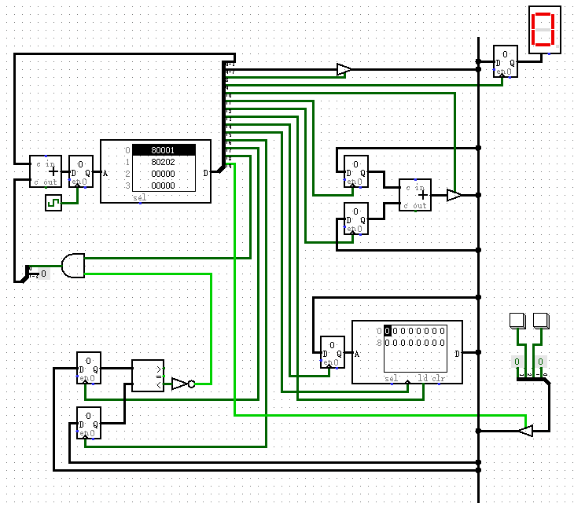
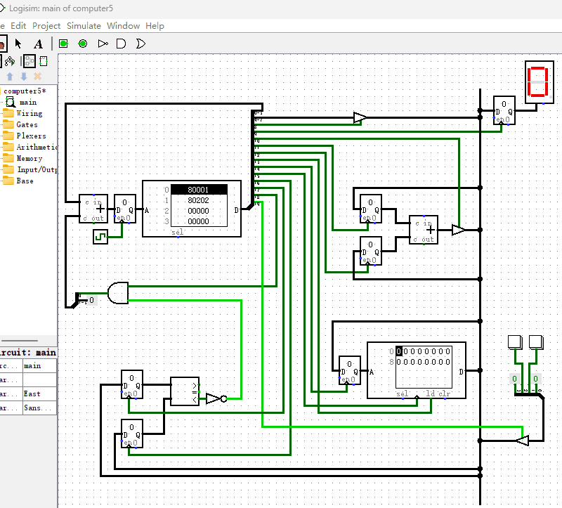

制作一个带按键输入的计算机
到此为止，我们制作的计算机系统已经比较完整了，再加上一个输入设备就更完美了。所以，本节我们就给它增加两个按钮作为按键输入，有点类似电脑键盘的功能。和前一节电路结构相比，改动很小，我们只增加了2个按钮和一个“断路控制器”即可，其电路图如下图所示。

我们给“只读存储器”增加了1个输出端用于控制“按钮”的数据输出。“断路控制器”的作用是防止多个信号同时输入到总线，而导致系统短路的情况发生。“断路控制器”由ROM中的D19来控制，它的作用是控制“按钮数据”是否连接到总线上。
现在我们编写指令来实现这样一个功能：当按下任何一个按钮时，就把按钮对应的数值呈现在“十六进制数码管”上。很简单的一个功能吧，我把编写好的指令绘制在如下的表格中。
| 地址 | D3~D0 | D7~D4 | D8 | D9 | D10~D18 | D19 | 十六进制 |
|---|---|---|---|---|---|---|---|
| 0000 | 0001 | 0000 | 0 | 0 | 000000000 | 1 | 0x80001 |
| 0001 | 0010 | 0000 | 0 | 1 | 000000000 | 1 | 0x80202 |
| 0010 | 0000 | 0000 | 0 | 0 | 000000000 | 0 | 0x0 |
我们来逐条分析下这些指令是如何工作的。
- 地址0000：设置D19=1，使“按钮”的数据传送到总线
- 地址0010：设置D9=1，把总线数据传送给“十六进制数码管”显示出来
- 地址0010：跳转到地址0000，重新开始循环
它的演示动画如下图所示。
